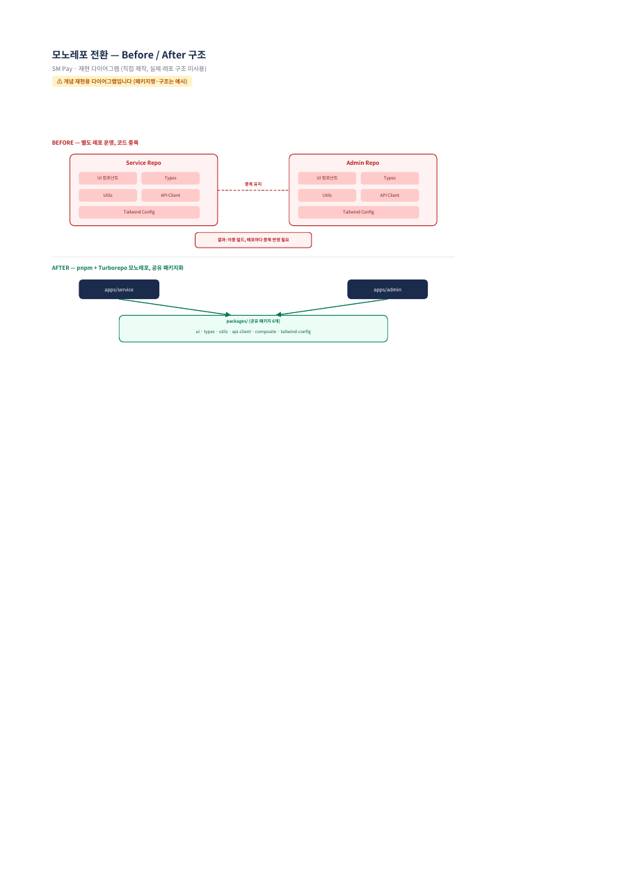
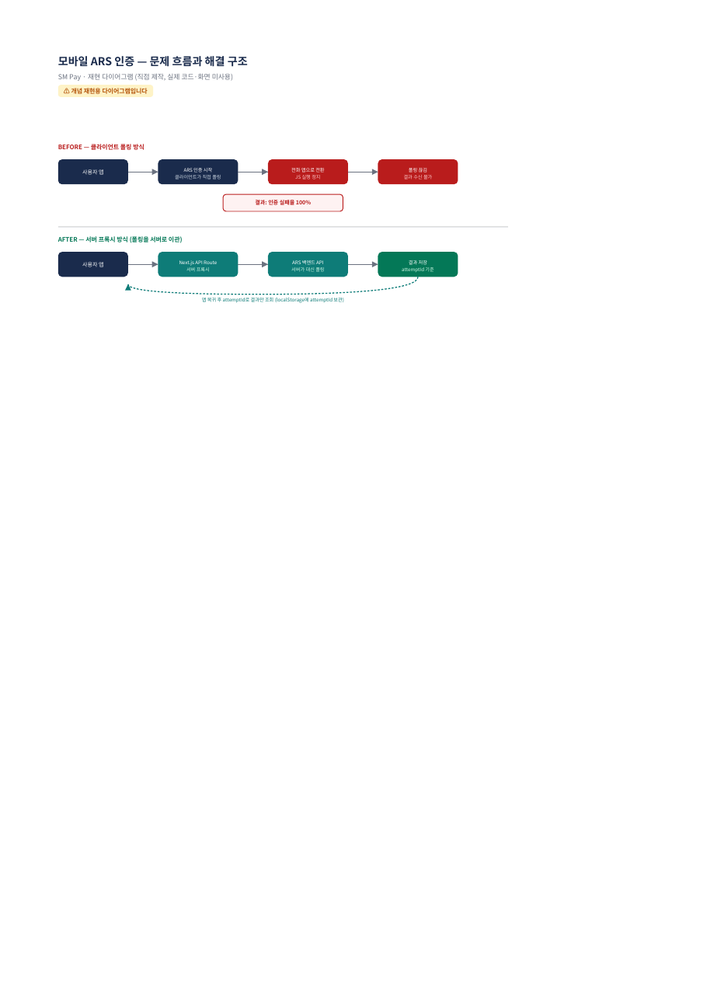
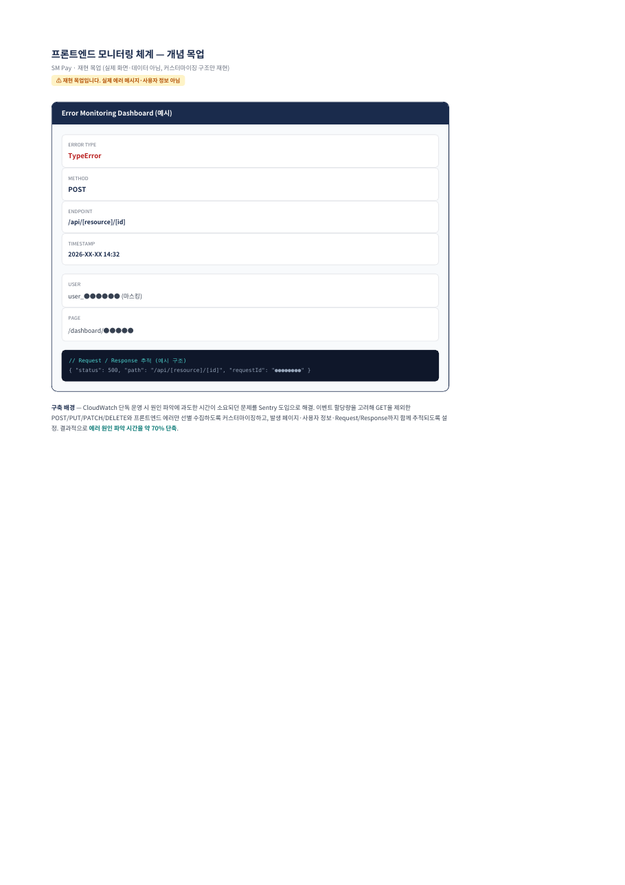
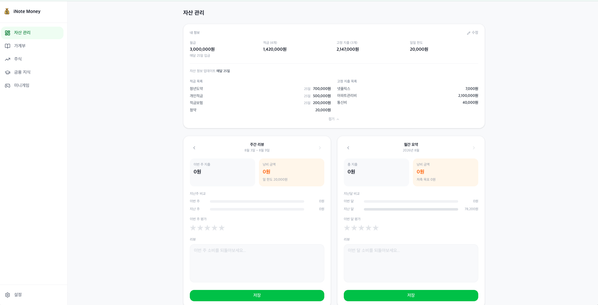

PORTFOLIO
Frontend Developer
4년 이상 4개의 스타트업에서 프론트엔드 신규 서비스를 기획부터 구축, 운영까지
단독으로 책임져왔습니다. 아래는 그중 가장 최근의, 가장 복잡했던 문제들을 다룬 기록입니다.
기능보다 흐름을, 개발자 관점보다 사용자 관점을 먼저 생각하는 프론트엔드 개발자입니다. 2018년 SI 개발자로 커리어를 시작해 2020년 프론트엔드로 전향한 이후, 상태 관리 구조 개선, 모니터링 체계 구축, 리포트 자동화 기능을 여러 조직에서 반복적으로 설계하고 고도화해왔습니다. 최근에는 AI 도구를 활용해 프론트엔드 밖의 영역(백엔드, 인프라)까지 스스로 판단할 수 있는 범위를 넓혀가고 있습니다.
SM PAY · 써치엠 · 2025.04 ~ 재직중
배경 — 서비스 앱과 어드민 앱을 별도 레포로 운영하며 시작했지만, 기능이 늘어날수록 컴포넌트·타입·API 인터셉터가 두 레포에 중복되기 시작했습니다.
판단 — pnpm + Turborepo 기반 모노레포로 구조를 전환하고, 공유해야 할 것과 앱별로 남겨야 할 것을 먼저 구분했습니다.
트레이드오프 — 전환 후 CI/CD가 각각 독립 빌드되며 이중 빌드 문제가 새로 생겨, Remote Cache와 git diff 기반 Selective Build로 해결했습니다.

⚠ 재현 다이어그램 — 실제 레포 구조·패키지명은 예시로 재구성
배경 — Galaxy 등 일부 모바일 기기에서 전화 앱으로 전환하면 JS 실행이 정지되어 클라이언트 측 폴링이 끊기고, 인증 결과를 받지 못해 실패율 100%가 발생했습니다.
해결 — Next.js API Route 프록시를 도입해 서버가 백엔드 ARS API를 대신 호출하고 결과를 저장하도록 구조를 변경했습니다. 클라이언트는 앱 복귀 후 attemptId로 결과만 조회하면 되도록 만들어, 폴링 자체를 서버로 이관했습니다.

⚠ 재현 다이어그램 — 실제 코드·화면 미사용
배경 — FE 로그 관리가 없어 오류 발생 시 원인 파악이 어려웠고, Slack 알림 연동 후에도 메시지가 시간이 지나면 소실됐습니다.
해결 — CloudWatch → Slack → Sentry 순으로 단계적으로 개선했습니다. 이벤트 한도를 고려해 GET을 제외한 POST/PUT/PATCH/DELETE와 FE 에러만 선별 수집하고, 발생 페이지·사용자 정보·Request/Response까지 노출되도록 커스터마이징했습니다.

⚠ 재현 목업 — 실제 데이터·화면 아님
INOTE MONEY · 개인 프로젝트 · 2026.05 ~ 진행중

배경 — 4년간 프론트엔드만 다뤄오면서, 백엔드·인프라 판단은 항상 다른 사람의 몫이었습니다. 이 경계를 스스로 넘어보고 싶어 가계부·자산관리 서비스를 기획하고, Next.js(FE)와 NestJS(BE)를 완전히 분리한 실무형 구조로 직접 만들기 시작했습니다.
판단 — 혼자 모든 걸 다루려 하기보다, AI와의 협업 자체를 구조화했습니다. Claude Code는 아키텍처 설계와 구현을, Cursor는 구현 이후 QA와 코드 리뷰를 전담하도록 역할을 분리해 운영했습니다.
막힌 지점 — FE(Vercel)와 BE(Render)를 서로 다른 도메인에 배포하면서 크로스 도메인 쿠키 인증 문제에 부딪혔고, AI와 함께 원인을 추적하며 해결했습니다.
Redux → React Query + Recoil 전환으로 코드 가독성 40% 향상. 카카오맵 기반 창고 탐색 UX 개선.
B2B 에너지 대시보드 신규 구축 단독 담당. 실시간 에너지 사용량 시각화 UI 구현.